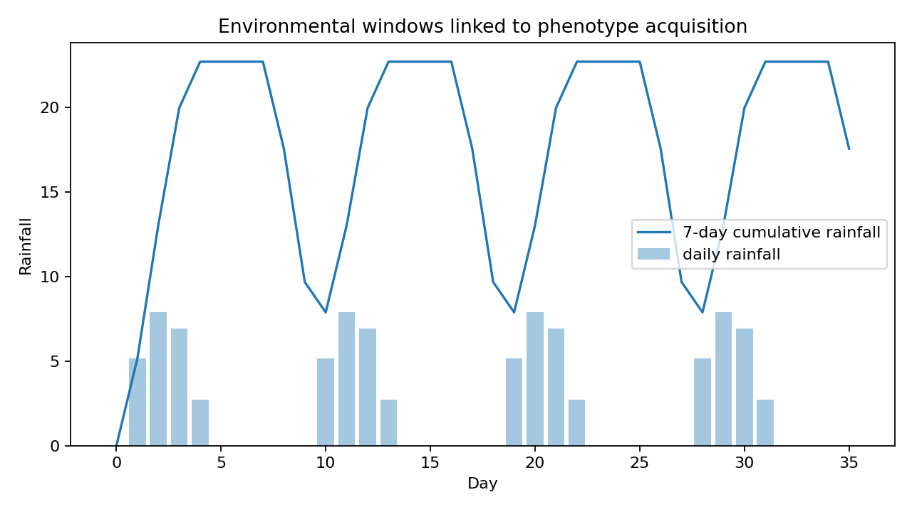

OmniPhenoR Environmental Covariates: Weather Windows and Lagged Phenotype Response
Source:vignettes/v31-environmental-covariates.Rmd
v31-environmental-covariates.RmdPurpose
Longitudinal phenotypes are expressions of genotype, treatment, developmental stage, and environment. Plant phenomics therefore benefits from aligning sensor-derived traits with weather and soil measurements (Tardieu et al. 2017). Version 0.4.0 introduces transparent weather joins, environmental windows, thermal time, and within-subject lagged correlation.

1. Weather data
w <- pheno_data("weather_series")
head(w)
#> environment day date tmin tmax tmean rain vpd
#> 1 E1 0 2026-05-01 18.00000 30.00000 24.00000 0.000000 1.200000
#> 2 E1 1 2026-05-02 18.68404 30.68404 24.68404 5.142301 1.405212
#> 3 E1 2 2026-05-03 19.28558 31.28558 25.28558 7.878462 1.585673
#> 4 E1 3 2026-05-04 19.73205 31.73205 25.73205 6.928203 1.719615
#> 5 E1 4 2026-05-05 19.96962 31.96962 25.96962 2.736161 1.790885
#> 6 E1 5 2026-05-06 19.96962 31.96962 25.96962 0.000000 1.790885
#> soil_moisture
#> 1 0.2800000
#> 2 0.3037115
#> 3 0.3153923
#> 4 0.3086410
#> 5 0.2856808
#> 6 0.27000002. Exact weather join
p <- subset(pheno_data("growth_series"), trait == "leaf_area")
j <- pheno_weather_join(
p,
w,
pheno_time = "day",
weather_time = "day",
by = "environment",
method = "exact"
)
head(j)
#> environment day plant_id treatment block date.x trait value
#> 1 E1 0 P01 control 1 2026-05-01 leaf_area 14.49367
#> 2 E1 0 P09 drought 1 2026-05-01 leaf_area 18.59801
#> 3 E1 0 P04 control 4 2026-05-01 leaf_area 19.16524
#> 4 E1 0 P12 drought 4 2026-05-01 leaf_area 16.97905
#> 5 E1 0 P07 nitrogen 3 2026-05-01 leaf_area 16.36706
#> 6 E1 0 P02 control 2 2026-05-01 leaf_area 15.71294
#> date.y tmin tmax tmean rain vpd soil_moisture
#> 1 2026-05-01 18 30 24 0 1.2 0.28
#> 2 2026-05-01 18 30 24 0 1.2 0.28
#> 3 2026-05-01 18 30 24 0 1.2 0.28
#> 4 2026-05-01 18 30 24 0 1.2 0.28
#> 5 2026-05-01 18 30 24 0 1.2 0.28
#> 6 2026-05-01 18 30 24 0 1.2 0.28Exact matching is preferred when daily phenotypes and daily weather are indexed to the same experimental day.
3. Nearest-time weather join
j2 <- pheno_weather_join(
p,
w,
"day",
"day",
by = "environment",
method = "nearest",
tolerance = 1
)A tolerance prevents an observation from being matched to a distant environmental record merely because it is numerically the nearest one.
4. Seven-day environmental exposure
w7 <- pheno_environment_window(
w,
time = "day",
variables = c("tmean", "rain", "vpd", "soil_moisture"),
window = 7,
by = "environment",
functions = c("mean", "sum", "max", "min")
)
head(w7)
#> environment day date tmin tmax tmean rain vpd
#> 1 E1 0 2026-05-01 18.00000 30.00000 24.00000 0.000000 1.200000
#> 2 E1 1 2026-05-02 18.68404 30.68404 24.68404 5.142301 1.405212
#> 3 E1 2 2026-05-03 19.28558 31.28558 25.28558 7.878462 1.585673
#> 4 E1 3 2026-05-04 19.73205 31.73205 25.73205 6.928203 1.719615
#> 5 E1 4 2026-05-05 19.96962 31.96962 25.96962 2.736161 1.790885
#> 6 E1 5 2026-05-06 19.96962 31.96962 25.96962 0.000000 1.790885
#> soil_moisture tmean_mean_w7 tmean_sum_w7 tmean_max_w7 tmean_min_w7
#> 1 0.2800000 24.00000 24.00000 24.00000 24
#> 2 0.3037115 24.34202 48.68404 24.68404 24
#> 3 0.3153923 24.65654 73.96962 25.28558 24
#> 4 0.3086410 24.92542 99.70167 25.73205 24
#> 5 0.2856808 25.13426 125.67128 25.96962 24
#> 6 0.2700000 25.27348 151.64090 25.96962 24
#> rain_mean_w7 rain_sum_w7 rain_max_w7 rain_min_w7 vpd_mean_w7 vpd_sum_w7
#> 1 0.000000 0.000000 0.000000 0 1.200000 1.200000
#> 2 2.571150 5.142301 5.142301 0 1.302606 2.605212
#> 3 4.340254 13.020763 7.878462 0 1.396962 4.190885
#> 4 4.987242 19.948966 7.878462 0 1.477625 5.910500
#> 5 4.537025 22.685127 7.878462 0 1.540277 7.701385
#> 6 3.780855 22.685127 7.878462 0 1.582045 9.492269
#> vpd_max_w7 vpd_min_w7 soil_moisture_mean_w7 soil_moisture_sum_w7
#> 1 1.200000 1.2 0.2800000 0.2800000
#> 2 1.405212 1.2 0.2918558 0.5837115
#> 3 1.585673 1.2 0.2997013 0.8991038
#> 4 1.719615 1.2 0.3019362 1.2077448
#> 5 1.790885 1.2 0.2986851 1.4934256
#> 6 1.790885 1.2 0.2939043 1.7634256
#> soil_moisture_max_w7 soil_moisture_min_w7
#> 1 0.2800000 0.28
#> 2 0.3037115 0.28
#> 3 0.3153923 0.28
#> 4 0.3153923 0.28
#> 5 0.3153923 0.28
#> 6 0.3153923 0.27Different aggregations have different meanings. Sum is natural for rainfall, while mean or maximum may be more interpretable for VPD depending on the question.
5. Thermal exposure
tt <- pheno_thermal_time(
w,
"tmin",
"tmax",
base = 10,
by = "environment"
)
head(tt)
#> environment day date tmin tmax tmean rain vpd
#> 1 E1 0 2026-05-01 18.00000 30.00000 24.00000 0.000000 1.200000
#> 2 E1 1 2026-05-02 18.68404 30.68404 24.68404 5.142301 1.405212
#> 3 E1 2 2026-05-03 19.28558 31.28558 25.28558 7.878462 1.585673
#> 4 E1 3 2026-05-04 19.73205 31.73205 25.73205 6.928203 1.719615
#> 5 E1 4 2026-05-05 19.96962 31.96962 25.96962 2.736161 1.790885
#> 6 E1 5 2026-05-06 19.96962 31.96962 25.96962 0.000000 1.790885
#> soil_moisture gdd thermal_time
#> 1 0.2800000 14.00000 14.00000
#> 2 0.3037115 14.68404 28.68404
#> 3 0.3153923 15.28558 43.96962
#> 4 0.3086410 15.73205 59.70167
#> 5 0.2856808 15.96962 75.67128
#> 6 0.2700000 15.96962 91.64090Thermal time and recent-environment windows are complementary. The former is cumulative developmental exposure; the latter describes recent conditions.
6. Same-time trait correlation
d <- pheno_data("growth_series")
pheno_time_cor(
d,
id = "plant_id",
time = "day",
trait = "trait",
value = "value",
trait_x = "leaf_area",
trait_y = "green_fraction",
within = TRUE
)
#> # A tibble: 1 × 7
#> trait_x trait_y lag within n correlation method
#> <chr> <chr> <dbl> <lgl> <int> <dbl> <chr>
#> 1 leaf_area green_fraction 0 TRUE 60 -0.565 pearsonWithin-subject centering reduces confounding by persistent differences among plants when the question concerns covariation through time.
7. Lagged response
pheno_time_cor(
d,
"plant_id",
"day",
"trait",
"value",
"leaf_area",
"green_fraction",
lag = 7,
within = TRUE
)
#> # A tibble: 1 × 7
#> trait_x trait_y lag within n correlation method
#> <chr> <chr> <dbl> <lgl> <int> <dbl> <chr>
#> 1 leaf_area green_fraction 7 TRUE 48 -0.766 pearsonLagged correlation is descriptive. It does not establish causality and can be sensitive to autocorrelation, trend, and the time grid.
8. Exposure windows should be pre-specified
Trying 3-, 5-, 7-, 10-, 14-, and 21-day windows and reporting only the strongest association creates a selection problem. Define plausible windows from crop physiology or treat window length as a sensitivity analysis.
9. Scale and unit discipline
Weather integrations should retain units. A seven-day cumulative rainfall is in millimeters, mean VPD is in pressure units, and thermal time is degree-days. Unit metadata should remain visible when features are exported to modeling.
10. Multi-environment trials
Environment identifiers must be part of the join key. Day 14 in one site is not interchangeable with day 14 in another site unless the weather table and biological origin have been aligned deliberately.
Reporting checklist
Report environmental sensor/station source, distance to plots when relevant, temporal aggregation, units, missing-data handling, time zone, exact/nearest join tolerance, window definitions, thermal-time formula, lag convention, within-subject centering, and whether windows were pre-specified or selected empirically.
Final perspective
Environmental covariates become useful phenomic predictors only when the temporal join is explicit. OmniPhenoR records the alignment logic so that genotype/treatment trajectories can be interpreted in their actual environmental context.
Extended worked interpretation
Environmental covariates operate at different temporal and spatial scales. A nearby weather station may represent air temperature reasonably but rainfall can vary substantially over short distances. Soil moisture measured in one sensor location may not represent every plot. The environmental linkage should therefore include the source and spatial support of each variable.
Window summaries are often correlated with one another. Mean temperature over 3, 5 and 7 days are not three independent predictors. When several windows are explored, treat the exercise as model development with appropriate validation rather than as multiple independent tests of environmental effects.
For prediction, compute environmental windows using only information that would have been available at prediction time. This avoids future-data leakage and makes the validation scenario realistic.